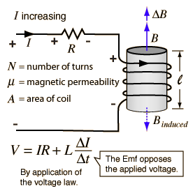

Inductance of a Coil

|
For a fixed area and changing current, Faraday's law becomes  |
| Inductance of a solenoid |
Inductance concepts
AC Circuits
| HyperPhysics***** Electricity and Magnetism | R Nave |
Increasing Current in Coil
|
Index Faraday's law concepts Inductance concepts | |||
|
Go Back |
Inductance of a Coil
|
Index Inductance concepts AC Circuits | ||||
|
Go Back |